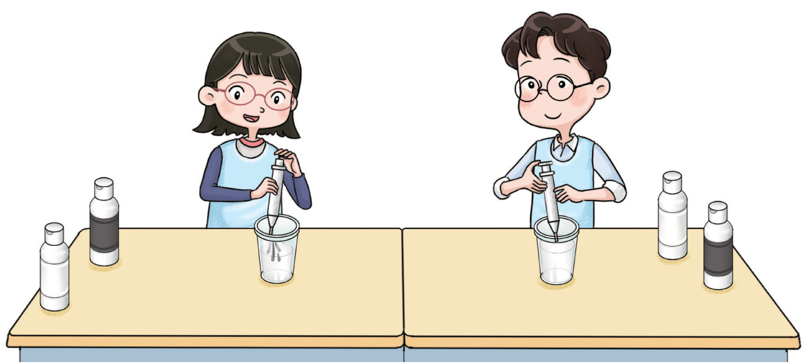

교실의 벽을 꾸미기 위해 흰색 물감과 검은색 물감을 섞어 회색 물감을 만들었습니다. 지혜는 흰색 200 mL에 검은색 6 mL를, 슬기는 흰색 250 mL에 검은색 10 mL를 섞었 습니다. 누가 만든 회색 물감이 더 어두운지 비교해 봅시다.
그림 보기
물음 1
물음 2
물음 3
물음 4
지혜가 만든 회색 물감에서 흰색 물감 양에 대한 검은색 물감 양의 비율은 얼마 인가요?
6
200
(=
3
100
=0.03)
슬기가 만든 회색 물감에서 흰색 물감 양에 대한 검은색 물감 양의 비율은 얼마 인가요?
10
250
(=
1
25
=0.04)
누가 만든 회색 물감이 더 어두운가요?
슬기
왜 그렇게 생각하나요?
흰색 물감 양에 대한 검은색 물감 양의 비율이
더 높기 때문입니다.

지혜
슬기